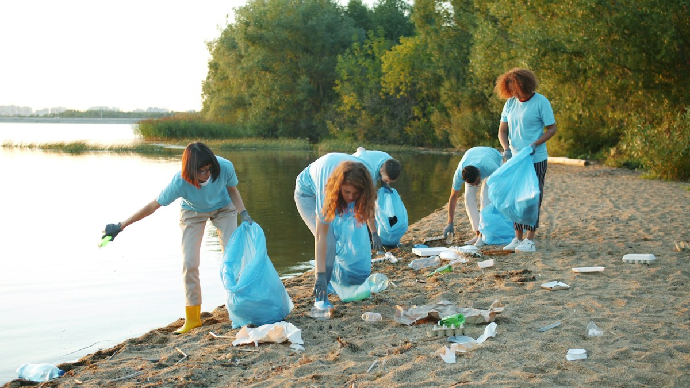

Reduzir emissões
Apoiar energia de baixo carbono, transporte coletivo e eficiente, edifícios econômicos e produção com menos desperdício reduz a quantidade de gases de efeito estufa lançados na atmosfera.

Não existe uma única atitude capaz de resolver a crise climática. Mudanças pessoais ajudam, mas precisam caminhar junto com decisões de empresas, governos e comunidades para reduzir emissões e cuidar dos ecossistemas.

Apoiar energia de baixo carbono, transporte coletivo e eficiente, edifícios econômicos e produção com menos desperdício reduz a quantidade de gases de efeito estufa lançados na atmosfera.
Diminuir plásticos descartáveis, evitar a poluição e fortalecer áreas protegidas ajuda a manter ecossistemas marinhos diversos e mais capazes de resistir às mudanças ambientais.
Educação climática, pesquisa científica e planos de adaptação permitem antecipar riscos, proteger comunidades costeiras e tomar decisões baseadas em evidências.
Conversar sobre o tema, participar de iniciativas locais e cobrar políticas alinhadas às ODS 13 e 14 transforma preocupação em ação coletiva. Cada proposta pode começar com um compromisso possível e mensurável.
O IPCC aponta que cada aumento adicional de temperatura intensifica os riscos climáticos. Por isso, agir cedo para reduzir emissões e preparar comunidades é mais eficaz do que esperar que os impactos se agravem.